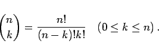
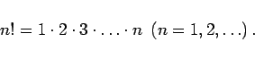
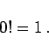

Inhalt Index DeskTop Bronstein

 Arithmetik Elementare Rechenregeln Ganzrationale Ausdrücke Binomischer Satz
Arithmetik Elementare Rechenregeln Ganzrationale Ausdrücke Binomischer Satz


Für nichtnegative ganze Zahlen n und k definiert man als Binomialkoeffizient den Ausdruck
|  | (1.40a) |
Dabei wird abkürzend mit n! das Produkt der positiven ganzen Zahlen von 1 bis n bezeichnet und n Fakultät genannt:
|  | (1.40b) |
Man definiert
|  | (1.40c) |
Die Werte der Binomialkoeffizienten können aus dem PASCALschen Dreieck abgelesen werden:
Der erste und der letzte Koeffizient in jeder Zeile ist definitionsgemäß gleich Eins; jeder andere Koeffizient in dem Schema ergibt sich als Summe der beiden links und rechts oberhalb von ihm stehenden Koeffizienten.